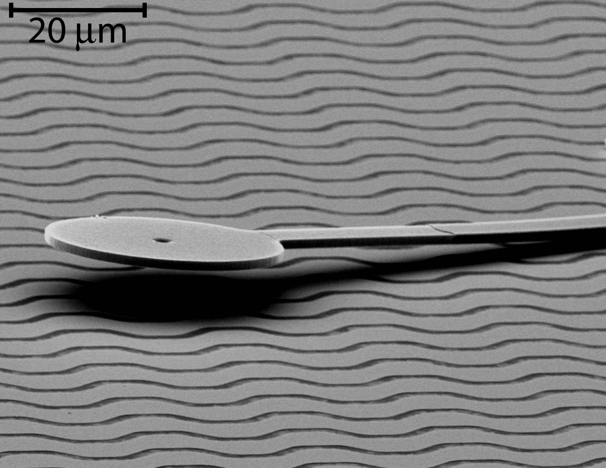

{kind=link}
{kind=link}
|
|
Dartmouth Engineering | Microengineering Lab | Levey Homepage | Donald lab (CS) |
An interdiscplinary team of engineers and computer scientists at Dartmouth have made the world's smallest untethered mobile robots. These robots can be remote controlled to walk anywhere on a special surface. The robots move forward with an inch-worm like gait, bending one step at a time. They turn by snapping down a foot on the end of a steering arm; motion then pivots arount the fixed foot. An operator can control forward motion and turning with a sequence of commands through a wireless tramsmission that also powers the motion. There is a potential for very precise position control; the average step size is a minute 12nm, about .01% of a hair diameter. However, the robots take over ten thousand steps a second and continue their motion for over half an hour with no sign of fatigue, with net motion of over one foot in length. That represents over 30 million steps; a human taking that many steps would go over half way around the world.
Micro Robot Dance choreographed to the Blue Danube waltz (Strauss), demonstrates independent control of two of our microrobots.
These microrobots were all designed at Dartmouth using Thayer School tools and techniques, fabricated in part by a foundary service with all remaining fabrication, tuning, and operation in the Thayer School Microengineering Lab. All videos of these microrobots have been recorded at Thayer School of Engineering.
FIGURE TO THE RIGHT: This SEM image shows the untethered scratch drive actuator (A) used for propulsion, and the cantilevered steering arm (B) which can be lowered to provide a turning pivot. The wavey lines the robot sits on are the insulated interdigitated electrode array which transmits power and control signals to the robot.
Movie of robot tracing a Dartmouth "D". In this movie, the dots and text are overlays added to the video after the fact. The underlying video of the robot motion is unedited except that it is shown twice actual speed. The curved portion utilizes both turning and straight motion gaits. The robot is 250 microns long and 10 microns high.
Movie of robot looping corners of a square. Shown twice actual speed. .mov file (2 Mbytes), or .avi file (8 Mbytes). Additional video archived at Dartmouth Technical Report 553
Publications:
Features:
In the Dartmouth Thayer Microengineering Laboratory.
In the Dartmouth Rippel Electron Microscope Lab:

The Dartmouth Research Team
The work is fundamentally interdsicplinary, involving electrical, mechanical, and chemical engineering, materials science, and computer science. It is representative of the groundbreaking work that comes from Dartmouth College, where strong interactions between departments are encouraged, and Thayer School of Engineering at Dartmouth, where there are no traditional departments to create boundaries between electrical, mechanical, chemical, and other types of engineering.
The research team includes:
Students (those who do the hard work):
The work was funded in part by the Department of Homeland Security, Office of Domestic Preparedness through Dartmouth's Institute for Security Technology Studies (ISTS), and by the Thayer School of Engineering.
|
|
Dartmouth Engineering | Microengineering Lab | Levey Homepage | Donald lab (CS) |